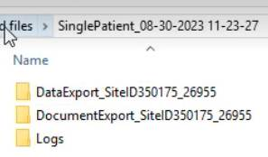
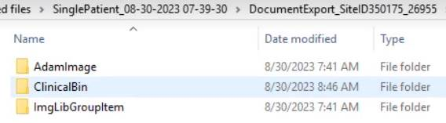
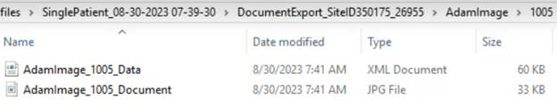
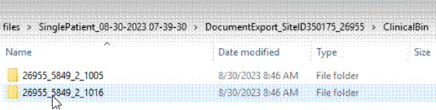

Prime Suite Single Patient Export Structure & Schema
When a Single Patient export with conversion is completed, the export package containing the patient’s electronic health information (EHI) is provided in the directory structure below. Select the details link next to any folder or file below for more information about it:
Root Export / Conversion folder details
Data Export folder details
Table files details
Document Export Folder details
Document Drawings folder (AdamImage) details
Document Folder
Document Data file
Document file
Documents and Document Data folder (ClinicalBin) details
Document Folder details
Document Data file details
Document file details
Image Library Images folder (ImgLibGroupItem) details
Document Folder
Document Data file
Document file
Logs details
Error log file
Process log file
Note: Some of the files provided as part of the Prime Suite EHI Export will need to be processed through a conversion tool to be unencrypted. The Prime Suite Conversion Tool installation file is available on the My Greenway support portal. Information about exporting and converting single patient or patient population EHI is provided in the Prime Suite online help.
Root Export / Conversion Folder
The root folder for the exported / converted files uses the following filename format:
SinglePatient_<FileCreatedDateTime> mm-dd-yyyy HH-MM-SS
In the example below, the folder is named SinglePatient, followed by the date of 08/30/2023 and time of 11:23:27.
Within this root folder will be the following sub-folders:

Data Export Folder
The Data Export folder contains the tables of data from the patient’s records. The folder name will be in this format:
DataExport_SiteID12345_<PatientID>9876
For example, in the image in the root folder, the filename is the text Data Export followed by the text Site with a site ID of 350175 and then patient ID of 26955.
Table Files
In the Data Export folder, each data table is an XML file. The filename format is:
<tablename>.xml
The schema for these XML files is:
<Table Name>
<row> //First record of the table for the patient
<Column 1>Column Value </Column1> //first column value
<Column 2>Column Value </Column2> //second column value
</row>
<row> //Second record of the table for the patient
<Column 1>Column Value </Column1> //first column value
<Column 2>Column Value </Column2> //second column value
</row>
</Table Name>
How to use the reference information for Data Tables
The Prime Suite Data Dictionary provides reference information for each table, including a table description and descriptions of the fields in the table. You can open a patient data table and then open the Prime Suite Data Dictionary to the table of the same name to perform a side-by-side review of this information.
Document Export Folder
The Document Export folder contains the documents that were exported / converted from the patient’s record in Prime Suite and associated document data. It has this folder name format:
DocumentExport_SiteID12345_<PatientID>9876
The three sub-folders within the Document Export Folder are:
- AdamImage contains sketchpad annotations and associated data files
- ClinicalBin contains the documents and associated document data files
- ImgLibGroupItem contains sketchpad images and associated image data files

Document Drawings Folder (AdamImage)
This folder is named AdamImage. It contains the sketchpad annotations on drawings. Each image has a folder with the image ID as the name. These images must be reconstructed using the process described in Reconstruct Medical Drawings with Patient-Specific Annotations as SVG.

Any sketchpad images that in drawings are in the following folder structure:
AdamImage
Image ID folder
AdamImage_imageID_Data
AdamImage_imageID_Document
Documents and Document Data Folder (ClinicalBin)
The Document Export folder is named ClinicalBin. It contains the documents and document data that was exported from the patient’s medical record in Prime Suite. Each document has a folder with the image ID as the name.
Any sketchpad images that in drawings are in the following folder structure:
ClinicalBin
Document folder
Document Data File
Document File
Document Folder
In the ClinicalBin folder will be a folder for each document with the following name format:
<patientID>_<documentID>_<seqID>_<filetypeID>
In the example below, the first document folder has a patient ID of ‘26955’, a document ID of ‘5849’, a sequence ID of ‘2’, and a filetype ID of ‘1005’.

Each document folder will contain two files: a data file and a document file. The file will be in the following format:
ClinicalBin_<patientID>_<documentID>_<seqID>_<filetypeID>_Data.xml
ClinicalBin_<patientID>_<documentID>_<seqID>_<filetypeID>_Document.xml
Document Data File
A Document Data File is an XML file located in a Document Folder. It will have the following filename format:
ClinicalBin_<patientID>_<documentID>_<seqID>_<filetypeID>_Data.xml
This file has the document’s details from the Greenway PrimeSuite database table with column headings and document data in the table row. However, it will not have the document’s raw content.
Document File
Located in a Document Folder, the Document file is the document’s raw content in its native file format. It will have the following filename format:
ClinicalBin_<patientID>_<documentID>_<seqID>_<filetypeID>_ Document.ext
where ext is the file extension, which could be any of the supported file formats: PDF, CCDA (xml), TIF, JPG, GIF, BMP, or TXT.
The file may be a document that was created in Prime Suite or an externally created document that is stored in Prime Suite. These files can be viewed in applications that support the specific format.
Document file types fall into two categories:
- Generic Document Types. Some documents exported / converted to their original format(s) do not generate any specific Greenway proprietary documents that need additional documentation. The generic document types are listed in the Prime Suite EHI XML Document Reference.
- Greenway Proprietary Document Formats. Some documents generated in Prime Suite are in a Greenway proprietary format in XML. Each of these proprietary formats is detailed in the Prime Suite EHI XML Document Reference.
How to use the XML Reference for Greenway Documents
The Prime Suite EHI XML Document Reference provides reference information for each document type generated in Prime Suite that has a Greenway proprietary document format. The reference describes each element in the format. You can open document’s format reference from the data export / conversion and then open the table description of the same name in the Prime Suite data dictionary to perform side-by-side research of the data.
Image Library Images folder (ImgLibGroupItem)
This folder is named ImgLibGroupItem. It contains the sketchpad drawings. Each image has a folder with the image ID as the name.
Any sketchpad images used in a patient document are in the following folder structure:
ImgLibGroupItem
Image ID folder
ImgLibGroupItem_imageID_Data
ImgLibGroupItem_imageID_Document
Logs Folder
The Logs folder contains two text files:
- ErrorLog.txt is the log of errors from the export / conversion.
- ProcessLog.txt is the log of exported / converted files.